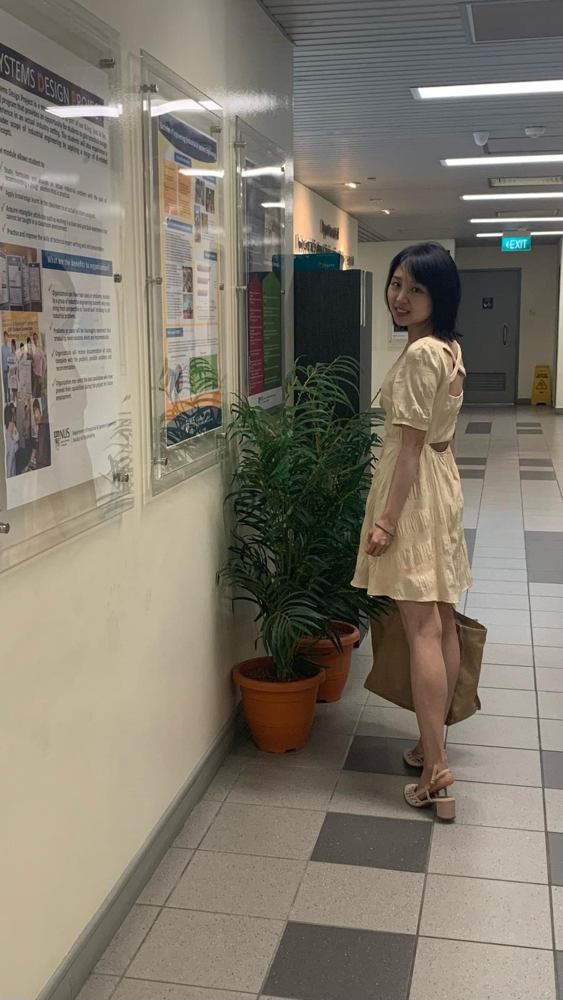

In June 2024, I will join the Shenzhen Research Institute of Big Data as a research scientist. I received my Ph.D. from the Department of Industrial Systems Engineering and Management at the National University of Singapore, as advised by Prof. Vincent Y.F. Tan and Prof. Yeow Meng Chee. Before that, I got my Bachelor's degree from the School of Computer Science at Northwestern Polytechnical University. During my undergraduate studies, I participated in the ACM International Collegiate Programming Contest (ACM-ICPC), where I secured two gold medals and one silver medal. I also received two awards for the fastest problem-solving. My research interests include the application of algorithm design in logistics and transportation planning. To date, I have published papers in high-quality SCI/SSCI journals and received the Best Paper Award at the CTS Conference in 2023. After completing my doctorate in 2023, I worked as a postdoctoral research assistant at École Polytechnique de Montréal, where I tackled a variant of the inventory routing problem under the guidance of Prof. Thibaut Vidal. I am currently serving as a reviewer for the European Journal of Operational Research (EJOR) and Computers & Operations Research (COR).
My primary research emphasis lies within the realm of combinatorial optimization, with a particular focus on vehicle and inventory routing issues. I specialize in employing a diverse array of meta-heuristic techniques to address and resolve these complex problems effectively.
Email: jingyi.z@u.nus.edu

Jingyi Zhao , Mark Poon , Zhenzhen Zhang* , Ruixue Gu
Computers & Operations Research, 2022
European Journal of Operational Research, 2023
Jingyi Zhao , Mark Poon , Vincent Y. F. Tan , Zhenzhen Zhang*
European Journal of Operational Research, 2024
The 24th COTA International Conference of Transportation Professionals (CICTP 2024)
The Ninth International Workshop on Freight Transportation and Logistics (ODYSSEUS Conference 2024)
Silver medal
in ACM-ICPC Asia Regional Contest (2016, Qingdao)Golden Medal
in ACM-ICPC Asia Regional Contest (2017, Qingdao)Golden Medal
in ACM-ICPC Asia Regional Contest (2017, Nanning)Best Paper Award
A neighborhood-based matheuristic for the time-dependent vehicle routing problem with delivery options, The 14th International Workshop on Computational Transportation Science (CTS 2023)Template adapted from Ailin's.